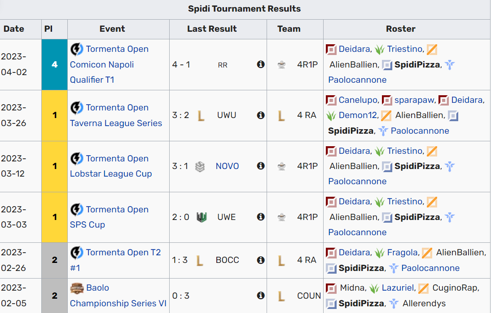

Diego Giorgianni in arte SpidiPizza è un ragazzo di 16 anni pieno di sogni e di speranze. Con 2 anni di carriera nel reparto e-sport ormai si è ritirato dal competitivo per vivere una vita più tranquilla ma ne parleremo più avanti
Diego Giorgianni era un appassionato giocatore di 16 anni che aveva trascorso gran parte del suo tempo libero a giocare a League of Legends. Era un talento promettente nel mondo competitivo del gioco, dove si dedicava con impegno e passione, ma tutto cambiò un giorno. Diego era noto per la sua abilità nel gioco e la sua squadra lo vedeva come uno dei pilastri fondamentali. Tuttavia, in un torneo cruciale, accadde qualcosa di inaspettato. Durante una partita importante, Diego sperimentò un'epifania improvvisa. Si rese conto che il suo amore per il gioco si era trasformato in una sorta di ossessione e che stava perdendo di vista altre importanti sfide nella vita. Dopo la partita, Diego prese una decisione drastica: decise di lasciare il mondo competitivo di League of Legends. I suoi amici e compagni di squadra erano scioccati e cercarono di convincerlo a restare, ma Diego era determinato a seguire il suo istinto. Diego si dedicò a esplorare nuove passioni e interessi. Iniziò a studiare musica e si iscrisse a una scuola di chitarra. Scoprì che aveva un vero talento musicale e che poteva esprimere se stesso in modi diversi rispetto al mondo dei videogiochi. Con il passare del tempo, Diego formò una band con altri studenti appassionati di musica. Si esibirono in piccoli locali e iniziarono a guadagnarsi una modesta ma fedele base di fan. Diego trovò una nuova felicità nell'esplorazione creativa della musica, che gli offriva un senso di soddisfazione diverso rispetto alle competizioni di League of Legends. Nonostante il suo abbandono del mondo competitivo dei videogiochi, Diego mantenne ancora un legame con League of Legends. Iniziò a fare streaming delle sue sessioni di gioco casual su Twitch e YouTube, condividendo le sue esperienze e conoscenze con altri giocatori. Questo gli permise di mantenere un collegamento con la sua passione originale, ma in un modo più equilibrato e sano.
La band all'inizio aveva un altro membro di nome tha_riky che però a seguito di un litigio lasciò la band ora fa musica da solo e non ha tanto successo
Questi sono i trofei vinti durante la sua carriera competitiva
Clicca qui Per vedere il suo instagram